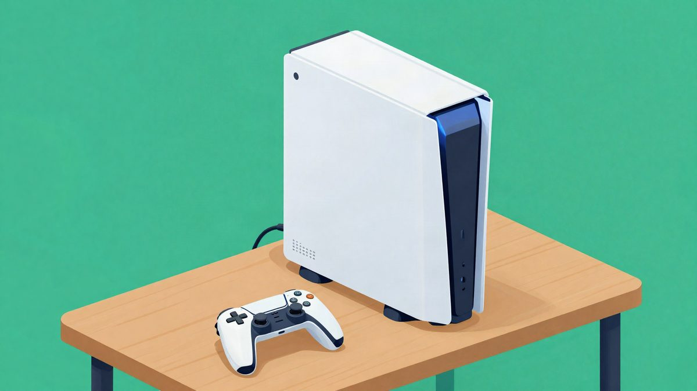

PS Plus u studenom: Death Stranding 2, Atomfall i Like a Dragon: Pirate Yakuza in Hawaii, a Sony gasi PC aplikaciju

Sony je objavio drugi val igara za PlayStation Plus Extra i Premium u studenom: Death Stranding 2: On the Beach, Atomfall, Dragon Quest 3 HD-2D Remake i Like a Dragon: Pirate Yakuza in Hawaii. Od 10. prosinca ukida PS Plus cloud streaming aplikaciju za PC, koju koristi manje od 0,4 posto članova s pravom na nju.
Sony je objavio drugi val igara koje u studenom stižu u PlayStation Plus Extra i Premium. Predvodi ga Death Stranding 2: On the Beach, a uz njega dolaze Atomfall, Dragon Quest 3 HD-2D Remake i Like a Dragon: Pirate Yakuza in Hawaii. Sony od 10. prosinca ukida i PS Plus aplikaciju za PC.
Nove igre u Extra i Premium katalogu
U oba paketa, Extra i Premium, stižu ove igre:
- Death Stranding 2: On the Beach (PS5)
- Atomfall (PS5, PS4)
- Dragon Quest 3 HD-2D Remake (PS5)
- Hell Let Loose (PS5), od 11. studenoga
- Like a Dragon: Pirate Yakuza in Hawaii (PS5, PS4), od 24. studenoga
- Trepang2 (PS5), od 24. studenoga
- MotoGP 26 (PS5), od 24. studenoga
- Cricket 26 (PS5, PS4), od 24. studenoga
Soul Reaver 2 (PS5, PS4) i Freedom Wars Remastered (PS5, PS4) dolaze samo u Premium.
Što su recenzenti rekli
Eurogamer ubraja Death Stranding 2 među istaknute igre 2025. godine. Lewis Gordon ocijenio ga je kao "busier, louder, and more emotionally resplendent take on this singular hiking sim". Matt Elliott opisao je Like a Dragon: Pirate Yakuza in Hawaii kao bučan i apsurdan spin-off koji se, unatoč neobičnom okruženju i ludoj radnji, i dalje doima kao vrhunska Yakuza igra.
Atomfall, Rebellionov britanski survival u postapokaliptičnom okruženju sličnom Falloutu, dobio je tri od pet zvjezdica. Tom Orry zaključio je da je to zanimljiva priča vrijedna otkrivanja za one koji prežive težak početak. Pretpostavlja se da je od izlaska znatno zakrpan. Tri od pet zvjezdica dobio je i Dragon Quest 3 HD-2D Remake. Daniella Lucas navodi da je to najbolja verzija igre, ali da bi mogla više učiniti za nove igrače.
Hell Let Loose, popularni shooter iz Drugog svjetskog rata, nije recenziran, ali njegov nastavak Hell Let Loose: Vietnam jest. Rick Lane ocijenio ga je kao fascinantan ratni simulator kad radi, ali s previše varijabli koje se lako izrode u frustrirajuće snajperiranje.
Kraj PS Plus aplikacije za PC
Sony je na PlayStation Blogu objavio da od 10. prosinca ukida PS Plus cloud streaming aplikaciju za PC. Razlog je mala upotreba: aplikaciju koristi manje od 0,4 posto članova s pravom na nju, to jest pretplatnika na Premium. Sony kaže da se tako može usredotočiti na usluge koje koristi više članova.
Izvor: Eurogamer